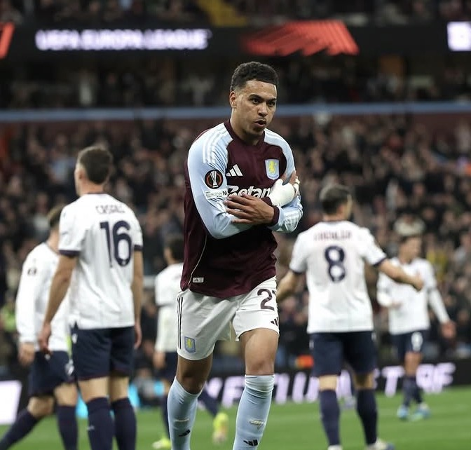
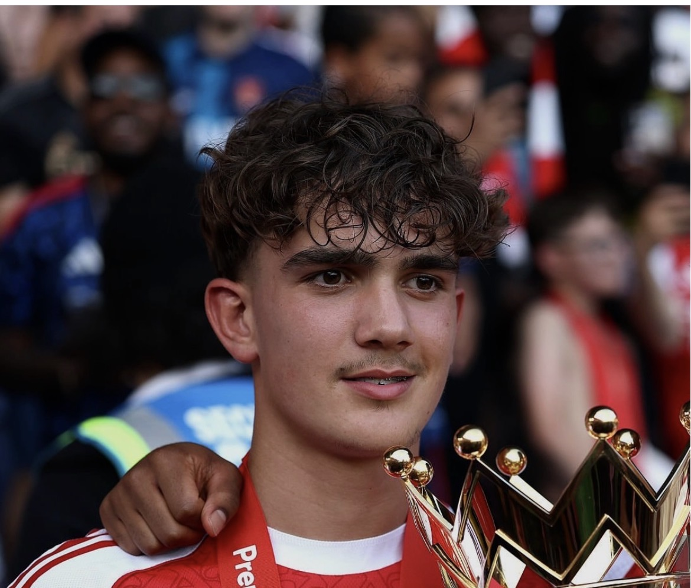
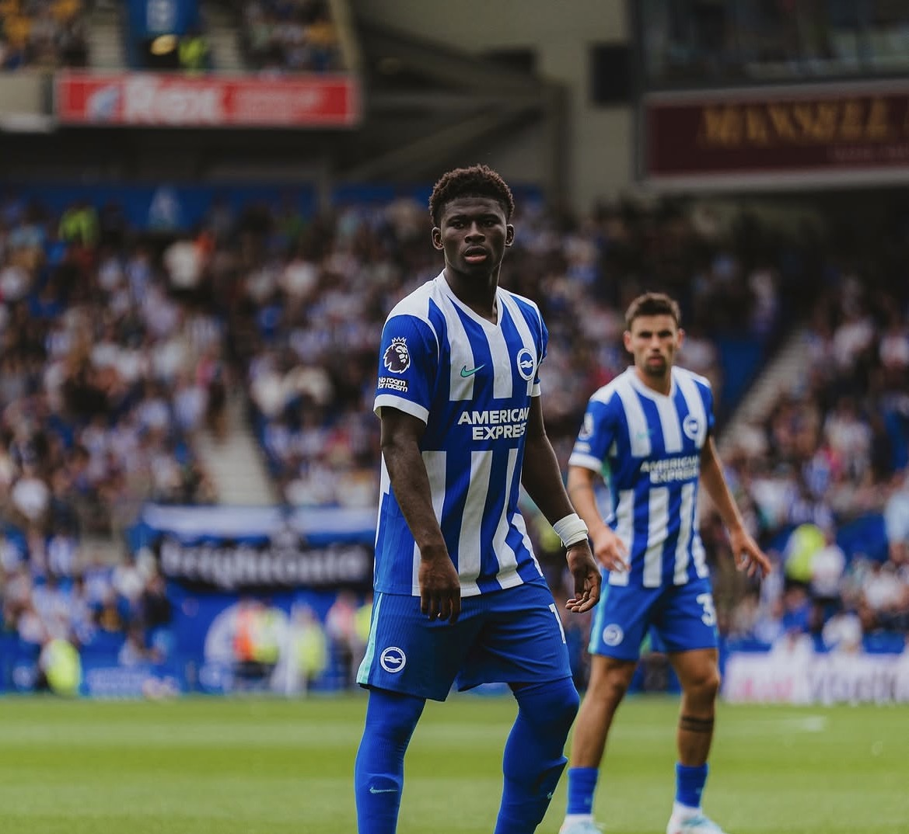
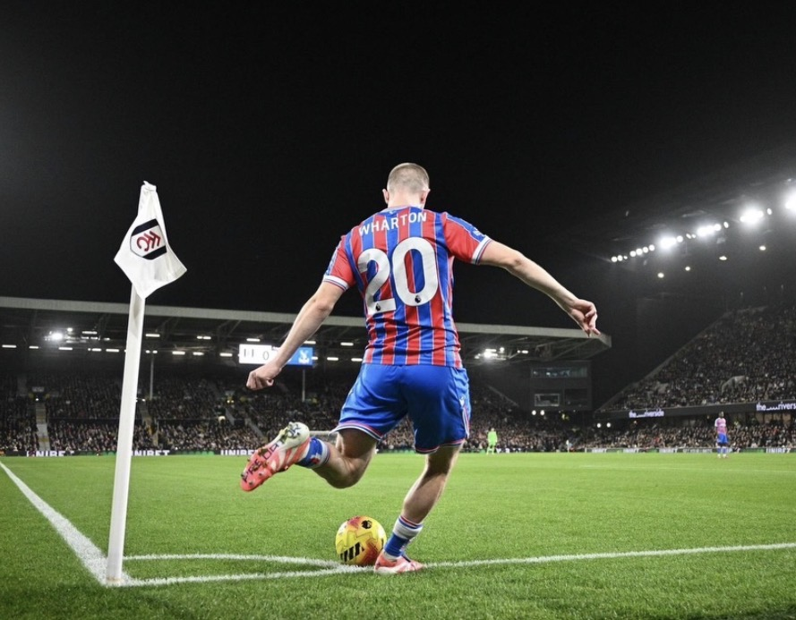
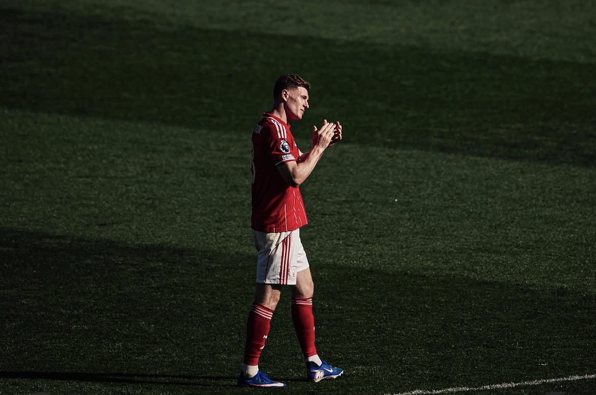
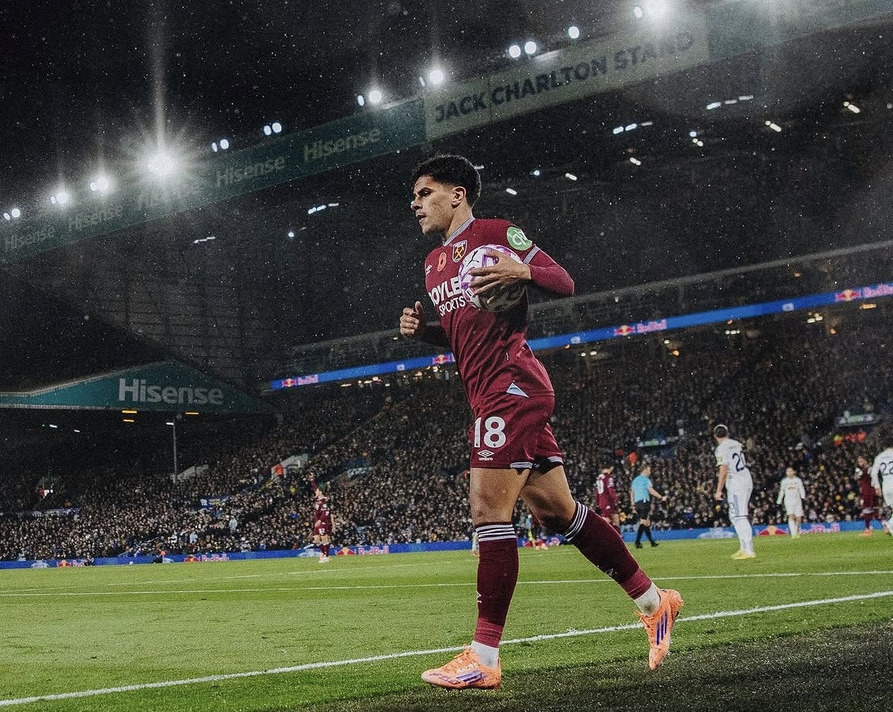

CAM
Florian Wirtz
所属: Liverpool/ 身長: 175cm
リヴァプールに所属するドイツ代表の天才アタッカー。驚異的なパスセンスとドリブルを武器に、若くしてレヴァークーゼンを無敗優勝へ牽引。移籍後もプレミアで輝きを放ち、ドイツの未来を背負って立つ世界屈指の司令塔。
次世代を担うPLの至宝たち
圧倒的なフィジカルによる対人守備だけでなく、攻撃の起点となる高精度な展開力を備えた次世代のミッドフィルダー
所属: Liverpool/ 身長: 175cm
リヴァプールに所属するドイツ代表の天才アタッカー。驚異的なパスセンスとドリブルを武器に、若くしてレヴァークーゼンを無敗優勝へ牽引。移籍後もプレミアで輝きを放ち、ドイツの未来を背負って立つ世界屈指の司令塔。

CAM所属: Aston Villa/ 身長: 187cm
アストン・ヴィラに所属するイングランド代表MF。巨体と高い技術を融合させた強力な中央突破が武器で、前線の複数位置をこなす。プレミア屈指の強烈な個性を放つ、新進気鋭の大型アタッカー。
所属: Rayan Cherki/ 身長: 177cm
マンチェスター・シティに所属するフランス代表MF。完璧な両足の技術から繰り出される天才的なドリブルと、創造性溢れるラストパスが武器。プレミアリーグでも瞬く間にアシストを量産する、次世代のファンタジスタ。

CM所属: Arsenal/ 身長: 183cm
アーセナルに所属する16歳の才能。16歳ながら25/26シーズンでは公式戦12試合に出場、さらにプレミアリーグ史上最年少ゴールをあげるなど今後が楽しみな若手。
所属: Manchester United/ 身長: 184cm
マンチェスター・ユナイテッド所属のイングランド代表MF。卓越したテクニックと驚異的な冷静さを兼ね備え、中盤の底からゲームを支配。若くしてクラブと代表の主力に定着した、世界屈指の天才ミッドフィルダー。
所属: AFC Bournemoth/ 身長: 178cm
プレミアリーグのボーンマスに所属するイングランド世代別代表MF。巧みなドリブルでの推進力と、創造性溢れるパスワークが武器。下部リーグで最優秀若手賞を受賞し、最高峰の舞台でも輝きを放つ次世代の万能型司令塔。

CDM所属: Brighton&Hove Albion/ 身長: 179cm
ブライトン所属のカメルーン代表MF。強靭なフィジカルを活かしたボール回収力と、中盤を力強く切り裂くドリブル突破が武器の大型ボランチ。かつての主力を彷彿とさせる高いポテンシャルを秘めた、新進気鋭のダイナモ。
所属: Newcastle United/ 身長: 185cm
ニューカッスルに所属するイングランド世代別代表MF。185cm超の体格を活かしたキープ力と、卓越したパスセンスによるゲームメイクが武器。10代で名門の中盤を託された、クラブ生え抜きの超大型セントラルMF。

CDM所属: Crystal Place/ 身長: 182cm
クリスタル・パレスに所属するイングランド代表MF。極上の左足から放たれる高精度な縦パスで局面を打開するゲームメーカー。球際の激しい守備も兼ね備え、ビッグクラブが争奪戦を繰り広げる若き天才ピボット。

CDM所属: Nottingham Forest/ 身長: 179cm
ノッティンガム・フォレストに所属するイングランド代表MF。卓越したテクニックによる推進力と、タフな守備を兼ね備えた万能型ダイナモ。ニューカッスルから移籍後にブレイクし、代表でも頭角を現す気鋭の俊才。
所属: Tottenham Hotspur/ 身長: 179cm
トッテナムに所属するオランダ代表の若き至宝。バルセロナやPSGの育成組織で育ち、卓越したテクニックと高い得点力を武器に台頭。強烈な推進力と創造性溢れるプレーで攻撃を牽引する、世界最高峰の天才MF。

CM所属: West Ham United/ 身長: 178cm
ウェストハムに所属するポルトガル代表MF。圧倒的な運動量と高い技術を兼ね備えた現代型の万能ボランチ。プレミアリーグで評価を急上昇させ、A代表デビューも果たした近未来の中盤を担う注目の大器。